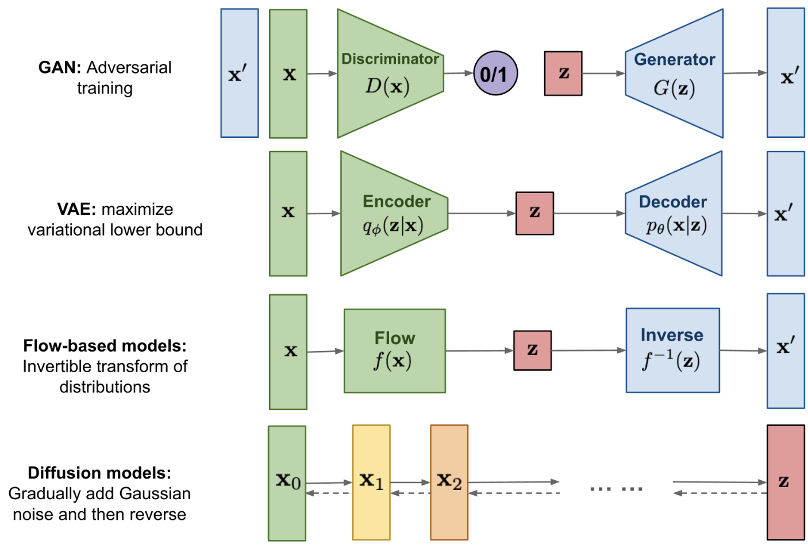
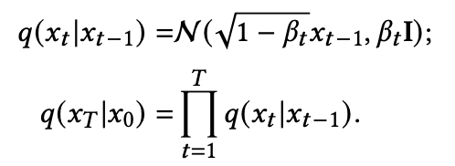

DDPM
在这篇博文中，我们将更深入地研究去噪扩散概率模型（也称为 DDPM、扩散模型、基于分数的生成模型或简称为自编码器），因为研究人员已经能够使用它们进行高质量的条件(or 非条件)图像/音频/视频生成。
我们将重温 (Ho et al., 2020) DDPM的原始论文，基于 Phil Wang 的实现在 PyTorch 中逐步实现它——(原论文为TensorFlow 实现)。
请注意，生成建模的扩散思想实际上已经在 (Sohl-Dickstein et al., 2015) 中引入。 然而，直到 (Song et al., 2019)（斯坦福大学），和之后的(Ho et al., 2020)（谷歌大脑）才独立改进了该方法。
请注意，扩散模型有多种视角解读。 在这里，我们采用离散时间（潜在变量模型）视角，但有必要理解其他视角。
好吧，让我们开始吧！
一.什么是扩散模型
如果将（去噪）扩散模型与其他生成模型（例如归一化流、GAN 或 VAE）进行比较，它并没有那么复杂：它们都将噪声从一些简单的分布转换为数据样本。 这也是神经网络学习从纯噪声开始逐渐对数据进行去噪的情况。
具体来说包括 2 个过程：
- 我们选择的固定（或预定义）前向扩散过程
- 学习到的反向去噪扩散过程

由
二.数学形式
因为需要损失函数来定义优化目标，所以我们以更公式化的方式解读扩散过程。
1.前向扩散过程：
基本上，每个新（稍微嘈杂的）图像
这是添加的信号相关噪声。
请注意，
感觉和GDN（广义分歧归一化）有点像。
如果方差表设置得合适，
如果我们知道条件分布
，然后我们可以反向运行这个过程：通过采样一些随机的高斯 ，然后不断去噪，最终得到一个真实分布的样本 。 然而，我们不知道
。这很棘手，因为它需要知道所有可能图像的分布才能计算这个条件概率。因此，我们将利用神经网络。
2.反向扩散过程：
我们将利用神经网络来近似（学习）反向的条件概率分布，我们称之为
如果我们假设这个逆向过程也是高斯分布，那么回想一下任何高斯分布都由 2 个参数定义：均值
我们可以将该过程参数化为：
其中均值和方差也以噪声水平
因此，我们的神经网络需要学习/表示均值和方差。 然而，DDPM 作者决定保持方差固定，让神经网络只学习（表示）均值
后续有论文也学习方差
。
三.定义目标函数
（通过重参数化均值）
为了导出目标函数来学习反向过程的均值
通过前向
如 Sohl-Dickstein 等人所示，构造正向过程
也就是
我们认为这个等式有着“nice property”。
这意味着我们可以对高斯噪声进行采样并对其进行适当缩放，并将其添加到
中以直接得到 。 请注意， 是已知 方差表 的函数，因此也是已知的并可以预先计算。 然后，这允许我们在训练期间优化损失函数 的随机项（或者换句话说，在训练期间随机采样 并优化 ）。 如 Ho 等人所示，此属性的另一个优点 是可以（经过一些数学运算后）重新参数化均值以使神经网络学习（预测）在噪声水平
添加的噪声（通过网络 )。 这意味着我们的神经网络成为噪声预测器，而不是均值预测器。 均值可以计算如下：
如此：
最终的目标函数
这里,
训练算法现在可以总结如下：

换句话说：
- 我们从真实未知且可能复杂的数据分布
- 我们在
- 我们从高斯分布中采样一些噪声，并在
- 神经网络被训练为根据损坏的图像
实际上，所有这些都是在批量数据上完成的，因为人们使用随机梯度下降来优化神经网络。
四.神经网络
神经网络需要在特定时间步长处接收噪声图像并返回预测噪声。 请注意，预测噪声是与输入图像具有相同大小/分辨率的张量。 所以从技术上讲，网络接收和输出相同形状的张量。 我们可以为此使用哪种类型的神经网络？
这里通常使用的与自动编码器非常相似，您可能还记得典型的“深度学习入门”教程。 自动编码器在编码器和解码器之间有一个所谓的“瓶颈”层。 编码器首先将图像编码成称为“瓶颈”的较小隐藏表示，然后解码器将该隐藏表示解码回实际图像。 这迫使网络只在瓶颈层保留最重要的信息。
在架构方面，DDPM 作者选择了 U-Net。 这个网络，像任何自动编码器一样，中间有一个瓶颈，确保网络只学习最重要的信息。 重要的是，它在编码器和解码器之间引入了残差连接，极大地改善了梯度流（受 ResNet [He et al., 2015] 启发）。
五.网络模块
0.位置嵌入
由于神经网络的参数跨时间共享（噪声水平），作者受 Transformer 的启发，采用正弦位置向量（position embeddings）对
SinusoidalPositionEmbeddings 模块将形状为 (batch_size, 1) 的张量作为输入（即一批中几个噪声图像的噪声水平），并将其转换为形状为 (batch_size, dim) 的张量，其中 dim 是图像的维数 位置嵌入。 然后将其添加到每个残差块中，我们将进一步介绍。
151class SinusoidalPositionEmbeddings(nn.Module):2 def __init__(self, dim):3 super().__init__()4 self.dim = dim5
6 def forward(self, time):7 device = time.device8 half_dim = self.dim // 29 embeddings = math.log(10000) / (half_dim - 1)10 embeddings = torch.exp(torch.arange(half_dim, device=device) * -embeddings)11 embeddings = time[:, None] * embeddings[None, :]12 # embeddings shape [batchsize, 1, dim//2]13 embeddings = torch.cat((embeddings.sin(), embeddings.cos()), dim=-1)14 # embeddings shape [batchsize, 1, dim]15 return embeddings1.残差块
接下来，我们定义 U-Net 模型的核心构建块。 DDPM 作者采用了 Wide ResNet 块（Zagoruyko 等人，2016 年），但 Phil Wang 已将标准卷积层替换为“权重标准化”版本，该版本与组归一化结合使用效果更好（参见（Kolesnikov 等人， 2019）了解详情）。
2.注意力模块
接下来，我们定义注意力模块，DDPM 作者将其添加到卷积块之间。这里使用了两种注意力变体：一种是常规的多头自注意力（在 Transformer 中使用），另一种是线性注意力变体（Shen 等人，2018），是non-local模块的直接替代品。
3.组归一化
DDPM 作者将 U-Net 的卷积层/注意力层与组归一化（GN）交织在一起。 下面，我们定义了一个 PreNorm 类，它将用于在注意力层之前应用 groupnorm。请注意，关于在 Transformers 中该在注意力之前还是之后应用归一化一直存在争议。
六.条件U-Net
现在我们已经定义了所有构建块（位置嵌入、残差块、注意力和组归一化），是时候定义整个神经网络了。 回想一下网络
网络将一批形状为 (batch_size, num_channels, height, width) 的噪声图像和一批形状为 (batch_size, 1) 的噪声水平作为输入，并返回一个形状为 (batch_size, num_channels, height, width) 的张量
网络构建如下：
- 首先，在一批噪声图像上应用卷积层，并为噪声水平计算位置嵌入
- 接下来，应用一系列下采样阶段。 每个下采样阶段由 2 个 ResNet 块 + groupnorm + attention + 残差连接 + 一个下采样操作组成
- 在网络的中间，再次应用 ResNet 块，与注意力交错
- 接下来，应用一系列上采样阶段。 每个上采样阶段由 2 个 ResNet 块 + groupnorm + attention + 残差连接 + 一个上采样操作组成
- 最后，应用一个 ResNet 块和一个卷积层。
最终，神经网络层层叠叠，就好像它们是乐高积木一样（但了解它们的工作原理很重要）。
七.定义前向扩散过程
前向扩散过程在多个时间步长
We set the forward process variances to constants increasing linearly from
to .
然而，在 (Nichol et al., 2021) 中表明，使用余弦方差表可以获得更好的结果。
下面，我们为
151def cosine_beta_schedule(timesteps, s=0.008):2 """3 cosine schedule as proposed in https://arxiv.org/abs/2102.096724 """5 steps = timesteps + 16 x = torch.linspace(0, timesteps, steps)7 alphas_cumprod = torch.cos(((x / timesteps) + s) / (1 + s) * torch.pi * 0.5) ** 28 alphas_cumprod = alphas_cumprod / alphas_cumprod[0]9 betas = 1 - (alphas_cumprod[1:] / alphas_cumprod[:-1])10 return torch.clip(betas, 0.0001, 0.9999)11
12def linear_beta_schedule(timesteps):13 beta_start = 0.000114 beta_end = 0.0215 return torch.linspace(beta_start, beta_end, timesteps)首先，让我们使用
231timesteps = 3002
3# define beta schedule4betas = linear_beta_schedule(timesteps=timesteps)5
6# define alphas 7alphas = 1. - betas8alphas_cumprod = torch.cumprod(alphas, axis=0)9alphas_cumprod_prev = F.pad(alphas_cumprod[:-1], (1, 0), value=1.0)10sqrt_recip_alphas = torch.sqrt(1.0 / alphas)11
12# calculations for diffusion q(x_t | x_{t-1}) and others13sqrt_alphas_cumprod = torch.sqrt(alphas_cumprod)14sqrt_one_minus_alphas_cumprod = torch.sqrt(1. - alphas_cumprod)15
16# calculations for posterior q(x_{t-1} | x_t, x_0)17posterior_variance = betas * (1. - alphas_cumprod_prev) / (1. - alphas_cumprod)18
19# 提取函数20def extract(a, t, x_shape):21 batch_size = t.shape[0]22 out = a.gather(-1, t.cpu())23 return out.reshape(batch_size, *((1,) * (len(x_shape) - 1))).to(t.device)这些全是T个元素的一维向量。
torch.cumprod 和 torch.cumsum很熟悉，一个累乘一个累加。
我们将用一张猫的图像来说明如何在扩散过程的每个时间步添加噪声。
首先，图片转tensor，并且转到[-1,1]的范围，即/255 * 2 - 1，这确保了神经网络逆向过程从标准正态先验
定义前向扩散过程
121# forward diffusion (using the nice property)2def q_sample(x_start, t, noise=None):3if noise is None:4noise = torch.randn_like(x_start)56sqrt_alphas_cumprod_t = extract(sqrt_alphas_cumprod, t, x_start.shape)78sqrt_one_minus_alphas_cumprod_t = extract(9sqrt_one_minus_alphas_cumprod, t, x_start.shape10)1112return sqrt_alphas_cumprod_t * x_start + sqrt_one_minus_alphas_cumprod_t * noise提取函数
extract配合sqrt_alphas_cumprod_t * x_start + sqrt_one_minus_alphas_cumprod_t * noise这段代码，就是一步到位的得到噪声图像让我们在一个特定的噪声水平/时间步
def get_noisy_image(x_start, t):2# add noise3x_noisy = q_sample(x_start, t=t)45# turn back into PIL image6noisy_image = reverse_transform(x_noisy.squeeze())78return noisy_imageget_noisy_image(x_start, t)就可以得到一个加噪图像，
这意味着我们现在可以定义给定模型的损失函数如下：
171def p_losses(denoise_model, x_start, t, noise=None, loss_type="l1"):2if noise is None:3noise = torch.randn_like(x_start)45x_noisy = q_sample(x_start=x_start, t=t, noise=noise)6predicted_noise = denoise_model(x_noisy, t)78if loss_type == 'l1':9loss = F.l1_loss(noise, predicted_noise)10elif loss_type == 'l2':11loss = F.mse_loss(noise, predicted_noise)12elif loss_type == "huber":13loss = F.smooth_l1_loss(noise, predicted_noise)14else:15raise NotImplementedError()1617return lossdenoise_model 将是我们上面定义的 U-Net。 我们将在真实噪声和预测噪声之间使用 Huber 损失。
最后，[-1,1]范围的tensor转回图片，即(+1)/2 * 255。
八.定义数据集及DataLoader
这里我们定义了一个常规的 PyTorch 数据集。 数据集仅包含来自真实数据集的图像，如 Fashion-MNIST、CIFAR-10 或 ImageNet，线性缩放至 [−1, 1]]。
每个图像都resize为相同的大小。 有趣的是，图像也会随机水平翻转。
来自论文：我们在 CIFAR10 的训练过程中使用了随机水平翻转； 我们尝试了使用翻转和不使用翻转的训练，发现翻转可以稍微提高样本质量。
在这里，我们使用 🤗 Datasets 库从中心轻松加载 Fashion MNIST 数据集。 该数据集由已经具有相同分辨率（即 28x28）的图像组成。
应用：https://cloud.tencent.com/developer/article/2090159
扩散模型综述
参考曾面试的候选人的一篇调研。
横向比较：
GANs 生成对抗网络：
采用生成器合成图像和鉴别器来区分真图像和假图像。
ARs 自回归模型：
逐像素生成图像，就像在 NLP 中下一个单词预测任务一样。
flows 流模型：
使用可逆函数 𝑓 将输入图像编码为潜在变量，并通过反向 𝑓 解码潜在变量。
VAEs 变分自动编码器：
将输入图像编码为遵循高斯分布的潜在变量。
DMs 扩散模型：
逐步学习将潜在变量解码为图像。 在每一步中，新的潜在变量都从依赖于当前潜在变量的高斯分布中采样。

纵向比较：
DDPM
前向过程：
DDPM 将给定图像
逐步编码为高斯噪声 ，这被称为前向过程。
反向过程：
⚠️这里
解码阶段，也是一个反向过程，逆向进行。在这个过程中，𝜇和Σ通过神经网络建模。
反向过程从
开始。 在每一步中，根据当前噪声图像 推导高斯分布。 (𝑡 − 1) 步图像是从新分布中采样的。 因此，图像合成过程实际上转化为去噪过程，正如名称：去噪扩散模型。
在反向过程中，𝜇 和 Σ 应该通过神经网络推断。 然而，在前向过程中，细心的读者应该注意到，
训练：训练损失很简单：
是一个噪声估计器，通常是一个由 调节的 U-Net。 𝐸旨在预测高斯噪声𝜖。